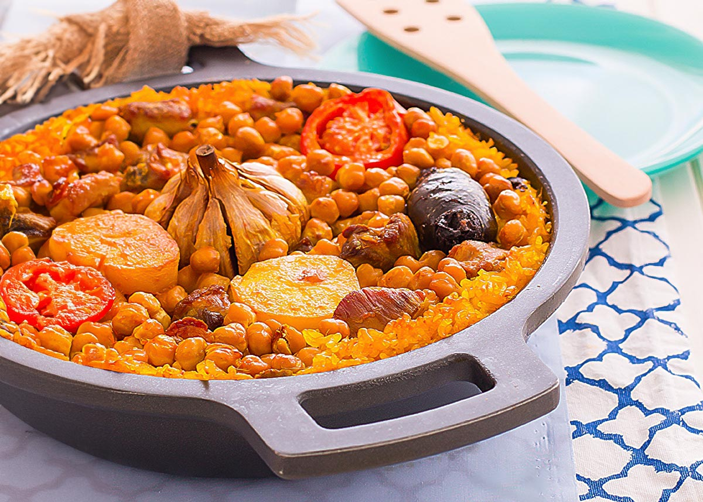

Ingredientes (4-6 personas)
| Producto | Cantidad |
|---|---|
| arroz bomba | 300gr |
| garbanzos cocidos | 150gr |
| morcilla de cebolla | 4 |
| patata | 1 |
| tomate triturado | 3 cucharadas |
| ajo | 1 cabeza + 2 dientes |

Elaboración
- Pela la patata y fríela.
- Corta el tomate y rehógalo.
- Dora las costillas y morcillas.
- Añade arroz, garbanzos y azafrán.
- Hornea a 220ºC 20 minutos.